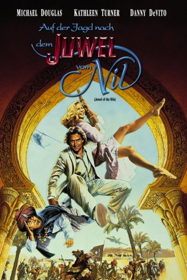

#1712 Auf der Jagd nach dem Juwel vom Nil
Alternativ: The Jewel of the Nile
 
 IMDB-Wertung: 6.1 / 10
IMDB-Wertung: 6.1 / 10  Metascore: 0
Metascore: 0 
Auf der Jagd nach dem Juwel vom Nil geraten die beiden Globetrotter Joan und Jack vom Regen in die Traufe. Gehetzt von wilden Wüstenhorden, verhext von wirbelnden Derwischen und gefangen in den düsteren Kerkern eines machthungrigen Scheichs - Katastrophe reiht sich an Katastrophe. Auch der leicht beschränkte und geldgierige Ralph ist wieder mit von der turbulenten "Jagd-Partie". Er scheut auch diesmal vor keiner Verrücktheit zurück, um sich in den Besitz des "Juwels" zu bringen ...
Jahr: 1985
Dauer: 106 Minuten
FSK: 12
Land: USA Studio: 20th Century FoxTonspuren:
Untertitel: Deutsch,
Auflösung: 1080p (1920x816) Größe: 8540 MB
Genre: Action, Komödie, Abenteuer, Liebe
Regisseur: Lewis Teague
Drehbuch: Mark Rosenthal, Lawrence Konner, Diane Thomas
Soundtrack: Jack Nitzsche
Darsteller:
 Michael Douglas als Jack
Michael Douglas als Jack Kathleen Turner als Joan
Kathleen Turner als Joan Danny DeVito als Ralph
Danny DeVito als Ralph Holland Taylor als Gloria
Holland Taylor als Gloria- Spiros Focás als Omar
- Avner Eisenberg als Jewel
- Paul David Magid als Tarak
- Howard Jay Patterson als Barak
- Randall Edwin Nelson als Karak
- Samuel Ross Williams als Arak
- Timothy Daniel Furst als Sarak
- Hamid Fillali als Rachid
- Guy Cuevas als Le Vasseur
- Peter DePalma als Missionary
- Mark Daly Richards als Pirate
- Sadeke Colobanane als Nubian Chief
- Hyacinthe N'Iaye als Nubian Wrestler
- Daniel Peacock als Rock Promoter
- Benyahim Ahed als Omar Officer
- Alaoui Hassen als Station Master
- Makoula Ahmed als Ticket Seller
- Akasby Mohamed als Old Man in Suq
- Zaouia Abdelmajid als F-16 Pilot
- Ted Buffington als Fire Walker
- Flora Alberti als Society Matron
- Patricia Davidson als Society Matron
- Ziraoui Mustapha als Omar's Elite Guard
- Baji Abdelmajid als Omar's Elite Guard
- Kachela Mohammed als Omar's Elite Guard
- Mohamed Attifi als Omar's Elite Guard
- Hilal Abdellatif als Omar's Elite Guard
- Ben Abadi Mohammed Fillali als Omar's Elite Guard
- Hamid Ait Timaghrit als Thief , uncredited
Datei: X:\2-Dilogie(A-F)\Auf der Jagd nach\Auf der Jagd nach dem Juwel vom Nil (1985, FSK12, 1920x816).mkv seit 09.08.2015
Festplatte: HD Collection-2(A-Z)-3(A-M)
 Alle Filme aus Gruppe '2-Dilogie(A-F)\Auf der Jagd nach'
Alle Filme aus Gruppe '2-Dilogie(A-F)\Auf der Jagd nach'